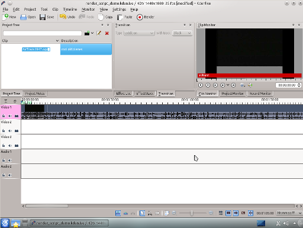
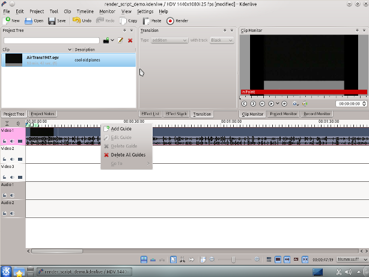
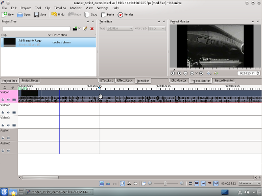
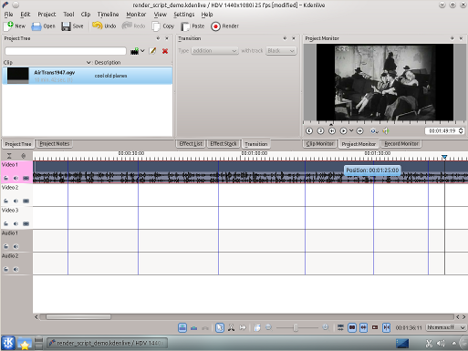
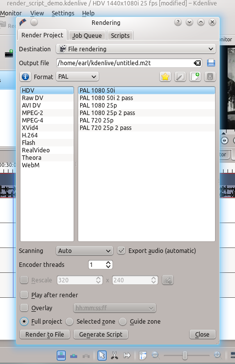
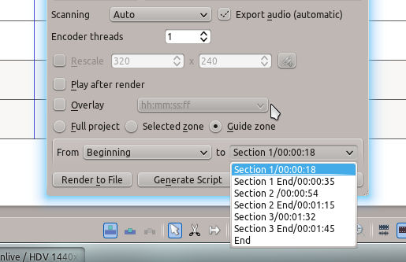
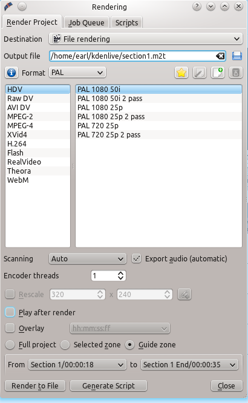
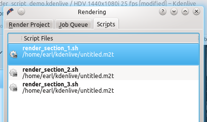
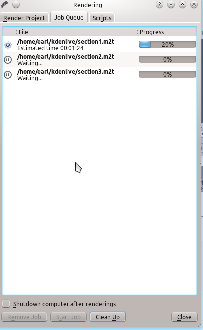

Rendering Using Guides and Rendering Scripts¶
Contents
Purpose¶
When editing video, time means everything. Especially how long it takes you to edit the clips, project, or footage you are working on. If you ever need to export sequences of your timeline separately, Kdenlive offers a great way to do this. You can set guides in your project that establish zones. You then can generate rendering scripts that will export these zones at a later date, during your sleep, or while you hunt and find food. Let’s check out how to do this.
Picking Sections with Guides¶
Start by adding a clip into the timeline. I’ve added some retro footage about airplanes. Cool.
{kind=link}
Next we want to add a guide for a specific section of the clip on the timeline. You can add a guide by selecting in the menu and then slide down to and select from the menu. Right clicking the top of the timeline also gives you the option . If you want to, you can also edit the guides you have set by right clicking on the timeline.
{kind=link}
After selecting this option, a window appears giving you the Position of the guide and a field to add a comment. Labeling the guide won’t hurt anyone, so I’ll name my first guide the extraordinary Section 1. A dark blue line appears vertically down through the tracks on your timeline.
{kind=link}
I’ll add a few more guides and then we’ll start rendering.
{kind=link}
The screenshot shows the 6 guides I have put in my project. They chop up the existing clip as I want for my project (that hopefully will become the first hit retro-experimental film…). Now we can export scripts that, when executed, will render these guide zones.
Generating Rendering Scripts¶
Start by clicking on the button in your toolbar, the one with the red circle surrounded by a white and black ring. You can also select this by going to the menu (Ctrl + Return).
{kind=link}
The new window gives us many choices about how to render our video. Look at the bottom of the window. We need to select the option. Selecting this will allow us to render our project using the guides we made earlier. Be sure and name the output file to a unique name for each script we will create. Otherwise the scripts will overwrite the different guide zones and not do what you wanted.
{kind=link}
We now can choose which guides will establish the regions of video we want to export using the pull down menus next to From and to. I’ll cut out the Beginning and instead use section 1 to Section 1 End, the guide names I defined earlier.
{kind=link}
Now I can render this to a file or generate a script that will render this guide zone to a file. Click and a dialog appears asking you to name the script. Kdenlive stores the clips in /yourhomedirectory/kdenlive/scripts
{kind=link}
After saving the script, the top tab in the window switches to . This lists all the scripts you have generated for the current project.
{kind=link}
I went ahead and generated 3 scripts based on the guide zones I set up in my timeline. Be sure and keep the .sh extension otherwise the rendering script will not be generated.
Starting Your Rendering Scripts¶
Once each script is generated, you need to start each one. You should be in the script tab and see your scripts listed. Start the process by selecting the script and clicking the button. Do this for each script.
{kind=link}
After clicking each script, you are switched to the Job Queue tab. Here you will see what script is being run and how many more are waiting to be run. If you have a large queue, you can take advantage of the nifty checkbox in the bottom left: .
Starting Your Rendering Scripts in a Command Line Terminal¶
For troubleshooting purposes there could be times that you want to run the render script in a terminal prompt. Rendering in the terminal can produce error logging information that can assist in debugging rendering issues.
To render the video in the terminal … * Note the location where Kdenlive has saved the .sh script (see Figure 8) * Open a terminal and change directories to the location of the .sh script * execute the .sh script
$ cd /home/earl/kdenlive/scripts
$ sh render_section_1.sh
or
$ ./render_section_1.sh
Summary¶
Creating guides can help organize your project while you work on it and when you share it with the world. You can use guides to keep track of areas or to generate rendering scripts that will do the mundane task for you. This feature makes exporting sections of your project quite easy. There are also other ways to take advantage of rendering sections and guide zones using guides. Have fun. Explore!